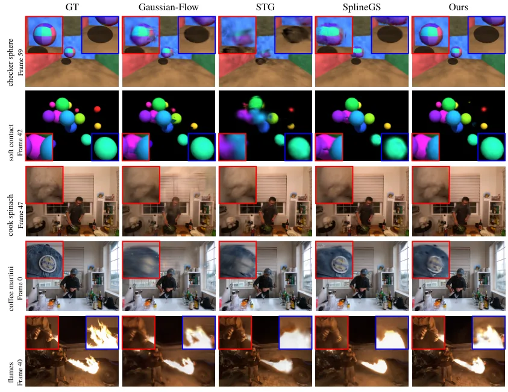

GaussianSpline：用自适应 Bézier 样条表达高动态 4D 高斯泼溅
GaussianSpline: Adaptive B\'ezier Splines for Highly Dynamic 4D Gaussian Splatting
把 3DGS 的运动表示换成“每条高斯一段可学宽度的三次 Bézier 样条 + 反射式 G1 接缝”，不引入任何辅助网络；在同样段数下把时间容量分给真正动得快的区域，flames 场景 PSNR 比 STG 高 3.46 dB，但软接触高频碰撞场景仍输给 Gaussian-Flow（26.84 vs 31.10 dB）。
PSNR on flames
gain vs STG
PSNR on checker sphere
LPIPS on soft contact
作者、单位与技术谱系 · Research context
作者与单位
研究脉络
- SplineGS（Yoon, Han, Oh, Lee；ICLR 2025）直接前作关系：同为多视角 4D 场景下的样条轨迹高斯方法，但控制点分布固定且均匀；本文把区间宽度变成可学参数，是对该参数化的最小改动式推进。[论文 §2 与 §4]
- Spacetime Gaussians（STG；Li et al., CVPR 2024）方法基座关系：提供“多项式轨迹 + 一阶四元数旋转”的无网络显式运动表示，本文直接沿用其旋转参数化，只把位置轨迹换成自适应样条。[论文 §3 式(8)]
- 3D Gaussian Splatting（Kerbl et al., 2023）基础框架关系：继承其各向异性高斯表示、可微 alpha 合成光栅化与自适应致密化（split/clone/prune）流程，本文不改渲染器。[论文 §3]
合作网络
- Tom Yachil ↔ Andrei Sharf（BGU 共同署名）Tom Yachil → Andrei Sharf关系：共同署名（同一论文、同一单位）[论文首页署名]
- GaussianSpline → 3DGS 光栅化与致密化GaussianSpline → 3DGS（Kerbl et al. 2023）关系：明确技术依赖：沿用其表示、可微 alpha 合成与 split/clone/prune[论文 §3 训练细节]
- GaussianSpline → SplineGS（Yoon et al.）GaussianSpline → SplineGS（Yoon et al., ICLR 2025）关系：同设定直接基线：均匀样条参数化被本文改为可学非均匀划分[论文 Table 1]
署名、单位、引用关系与基线选择均来自论文官方 HTML；两人是否同实验室、是否存在师生关系原文未给出，本文不做推断。未发现公开代码仓库（论文与 HTML 均未给出链接），因此“可复现性”只能依赖论文描述的训练细节。
方法本质拆解 · What actually changed
是不是微调？
不是微调，也不是预训练模型推理，而是逐场景从零优化。初始化只有单帧 COLMAP 的约 8k 个 SfM 点，30k 次迭代内同时优化高斯属性（位置、协方差、不透明度、SH 颜色）与样条参数（关节、控制点、区间宽度、G1 缩放 λ），没有任何预训练权重或辅助网络。致密化只在 500–9k 迭代之间执行，之后高斯集合冻结，后续只调属性与轨迹，因此它的“容量”由段数 K 与高斯数共同决定，而不是由网络宽度决定。
有没有额外约束？
有三类显式约束。第一是时间划分的单调性：区间宽度经 softmax 归一化后累加，0=t_0<…<t_K=1 由构造保证，不需要额外排序损失。第二是 G1 接缝：内部控制点由 C_{k,0}=J_k+λ_k(J_k−C_{k−1,1}) 生成，方向被锁死、模长由可学正标量 λ_k 控制，λ 初始为 1 时等价于 C1。第三是自由度裁剪：只有位置与旋转随时间变化，尺度、不透明度、颜色共享，这既是正则也是效率来源。隐含前提是相机已标定、多视角同步，且运动可被分段局部刚体近似。
推理/后端到底做了什么？
推理没有优化、没有分块、没有全局 BA，只是按时间求值再走标准 3DGS 光栅化：对每个高斯定位当前时间段、算段内参数 u、用三次 Bézier 得位置、用一阶四元数多项式得旋转，然后投影、按深度做 alpha 合成。也就是说它是“训练时把运动烘进参数、渲染时纯前向查表”，不存在测试时自适应。代价被前移到训练：30k 迭代、单卡 RTX 4090，论文未报告单帧渲染耗时，因此无法据此判断实时性。
方法本质是什么？
本质是把“时间分辨率分配”从超参数变成可学变量：每条高斯的 K 个区间宽度是一个 softmax 单纯形上的点，光度梯度会把宽度推向“重建误差对时间最敏感”的位置——快速运动段变窄、静止段变宽。接缝的 G1 约束保证这种非均匀划分不会在段边界产生折角，λ 则允许速度突变而不破坏切线连续。它改变的不确定性是“运动在时间上不均匀”这件事的表达能力，而不是位姿或尺度；它没有做的是空间耦合（邻域一致性）、拓扑变化建模与在线增量更新，这三件事仍留给外部系统。
输入多视角视频与 SfM 点云；把每条高斯轨迹的分段宽度改成可学 logits，并用反射式 G1 约束接缝；光度损失反传决定时间分辨率落在哪里；直接效果是同样段数下高动态区域更清晰（flames +3.46 dB）。

结论与问题Conclusion & Motivation
核心结论
GaussianSpline 的主张很窄但很硬：在固定段数预算下，让每条高斯轨迹的“时间分段宽度”变成可学参数，比提高样条阶数更能改善高动态重建。它把标准的逐高斯三次 Bézier 样条（K 段、K+1 个关节、2K 个内部控制点）扩展成带 K 个可学区间 logits 的非均匀划分，再用反射式 G1 约束保证跨段切线连续。结果是 flames 场景 PSNR 27.42 dB，比 STG 的 23.96 dB 高 3.46 dB、比 SplineGS 的 21.39 dB 高 6.03 dB；checker sphere 41.18 dB 也高于 SplineGS 的 40.37 dB。反例同样清楚：soft contact 场景只有 26.84 dB，落后 Gaussian-Flow 的 31.10 dB 4.26 dB。
动机与问题
现有 4D 高斯方法分三路，各有硬伤：MLP 形变场（Deformable 3DGS、GauFRe）渲染时要做逐高斯网络前向，开销随高斯数线性增长；结构化 4D 网格/平面（4DGS、4K4D）的分辨率是预先固定的，内存与保真度只能二选一；显式轨迹（STG 的多项式、Gaussian-Flow 的多项式+傅里叶）没有神经网络，但阶数与时间容量对所有高斯一视同仁。样条路线（两篇同名 SplineGS）已经有局部控制，却仍是均匀控制点分布——不管这一段是手在快速挥动还是狗在静止，分配的时间分辨率一样。真实场景恰恰是高度非均匀的：cook spinach 里手和夹爪持续运动，狗在前半段几乎不动、后半段才转头，均匀参数化会把容量浪费在静止区域。
方法Method
方法总览
方法只动“位置与旋转随时间怎么变”这一层。每条高斯有 K 段三次 Bézier：关节 J0…JK、每段两个内部控制点 C_{k,0}/C_{k,1}、以及 K 个区间宽度；宽度经 softmax 归一化成 w̃_k 并累加成时间戳 t_k，因此 0=t_0<t_1<…<t_K=1 天然单调。给定全局时间 t，先定位所在段、算出段内参数 u=(t−t_k)/w̃_k，再按标准三次 Bézier 求位置；旋转沿用 STG 的一阶四元数多项式 q(t)=q0+q1·t 并归一化。尺度、不透明度与球谐颜色与时间无关，所以时间自由度只有位置与旋转，表示保持紧凑。训练时每轮随机取一个帧索引、取该时刻的若干视角，把光度损失反传到样条参数与高斯属性；致密化只在前期（500–9k 迭代）进行，之后高斯集合固定。
关键技术细节
第一个关键点是区间宽度的参数化：logits 初始化为 0，因此训练开始时是均匀划分，随后与关节、控制点联合优化；softmax 归一化保证总和为 1，单调性由构造保证而不是靠惩罚项，这一点比“加一个排序损失”稳。第二个是 G1 接缝：C_{k,0}=J_k+λ_k(J_k−C_{k−1,1})，λ_k 初始化为 1（此时退化为 C1），只锁定切线方向、允许模长变化，避免 C1 把速度也锁死导致快速运动段被拖慢。第三个是训练调度：30k 迭代、单卡 RTX 4090、L1 + D-SSIM（λ=0.2）、SH 阶数 3、batch=2，关节宽度学习率取位置学习率的 0.3 倍，不透明度每 3k 迭代重置一次，不透明度低于 0.005 或尺度超过场景范围 0.1 倍的高斯被剪掉。论文没有报告渲染耗时，也没有做“每段至少保留多少时间”的下界约束，区间宽度理论上可以被压到接近 0。

实验Experiments
实验设置
数据分三类：Neural 3D Video（21 台同步相机、2704×2028 原始分辨率下采样到 1352×1014，公开 6 个场景）；Google Immersive 的 flames（46 台鱼眼相机组成的半球架，用 45 台标定相机、留出 camera_0001 做评测，共 50 帧，去畸变后 1280×960）；两个光线追踪合成场景 checker sphere 与 soft contact（20 台静态相机分两环、60 帧、同样下采样到 1352×1014，留中心视角评测）。指标是 PSNR、SSIM、LPIPS。对照是 Gaussian-Flow、STG（作者特意选“无时间不透明度”配置，避免用淡入淡出隐式表达运动）与 Yoon 等人的 SplineGS。迭代预算并不统一：Gaussian-Flow/STG 各 30k，SplineGS 在四个场景 20k、soft contact 40k，本文在 checker sphere 20k、soft contact 40k、三个真实场景 30k。默认 K=3，用单帧 COLMAP 的约 8k 个 SfM 点初始化。
实验数字与比较
Table 1 逐场景给出五组结果。flames：本文 27.42 dB / 0.9068 / 0.1498，STG 23.96 / 0.8888 / 0.1680，Gaussian-Flow 21.69 / 0.7453 / 0.3878，SplineGS 21.39 / 0.7309 / 0.4742——PSNR 领先 STG 3.46 dB，LPIPS 也是全场最低。cook spinach：32.92 dB，仅比 SplineGS 的 32.67 高 0.25 dB，但 LPIPS 0.1531 明显好于 SplineGS 的 0.2007。coffee martini：27.99 dB，高于 SplineGS 的 27.73 与 STG 的 26.80。checker sphere：41.18 dB / 0.9956 / 0.0151，高于 SplineGS 的 40.37 / 0.9953 / 0.0375。soft contact 是唯一明显落后项：26.84 dB / 0.9845 / 0.0289，PSNR 低于 Gaussian-Flow 的 31.10 dB，只在 LPIPS 上以 0.0289 略好于 0.0308。作者自己的总结也是“三个真实场景与 checker sphere 的 PSNR 第一、soft contact 第二”。
消融/失败边界
Table 2 在 5 个场景（cut roasted beef、cook spinach、sear steak、flame steak、coffee martini）上扫 K 与关节分布：K=2 时均匀 31.71 dB / 0.9459 / 0.0537，非均匀 32.08 / 0.9481 / 0.0540；K=3 时均匀 30.83 / 0.9441 / 0.0565，非均匀 31.74 / 0.9469 / 0.0551；K=4 时两者持平（31.61 对 31.61），SSIM 甚至略降（0.9454 对 0.9446）。也就是说：非均匀增益在低阶最大（K=3 时 +0.91 dB），阶数升到 4 后消失，这与“高阶样条本身就够灵活”一致。失败边界集中在高度瞬态动力学：soft contact 的球体碰撞在极短区间内产生大加速度，固定 K=3 段无法同时覆盖碰撞前后，作者把这条写进结论并建议按局部曲率或重建残差自适应插段。另一条边界是表示层面的——轨迹纯时间、逐高斯独立，没有空间耦合，所以刚体/铰接结构只能靠各自轨迹去“碰巧一致”，几何的出现与消失完全交给不透明度与致密化。
局限与迁移Limitations & Transfer
局限与待核验
作者明确承认三条：一是高度瞬态运动下会失败（soft contact 即例证），二是轨迹无空间先验、无邻域耦合，拓扑变化只能隐式处理，三是评测只覆盖公开的 N3DV 场景、一个 Google Immersive 场景与两个合成序列，且各基线用默认训练计划。我们另外要打三个问号。第一，消融 Table 2 的场景集合与主表 Table 1 不同，所以 31.74 这类均值不能和主表逐场景数字直接相加或对比。第二，Table 2 显示 K=2 非均匀（32.08）优于默认的 K=3 非均匀（31.74），论文却没有解释为何默认仍取 K=3，也没有报告区间宽度退化（某段被压到接近 0）的比例。第三，全文没有渲染帧率或显存数字，因此不能把它当作实时方案；另外每场景迭代预算不同（20k/40k/30k），与 SplineGS 的对比在 soft contact 上同为 40k、在其余场景本文更多，比较需按预算对齐后再下结论。
与你研究路线的关系
可迁移的是“把时间分辨率写进基元参数”的思路，而不是它的渲染管线。我们做动态场景下的建图与状态估计时，动态基元通常只有两种处理：全部用同一个运动模型（匀速/常加速），或者干脆剔除；GaussianSpline 提供第三种——每个基元自带非均匀时间划分，等价于用参数结构显式表达“这一段动得快”。具体可迁移模块有两个：区间宽度 logits 的 softmax 参数化（保证单调、可微、初始化即均匀），以及反射式 G1 接缝（只锁方向不锁速度）。下一步实验可以这样设计：取一段相机位姿已知的短序列，在固定高斯预算下比较 K=3 自适应样条与均匀样条在留出视角上的 PSNR，同时用独立的光流/场景流幅值检验“学到的区间宽度是否真的集中在高运动区域”——如果两者相关性接近 0，说明自适应只是多出的自由度在拟合噪声，而不是运动感知。